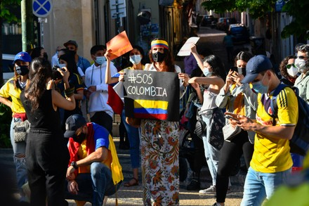
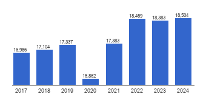
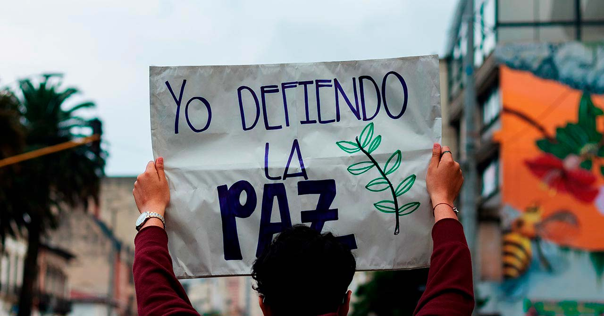
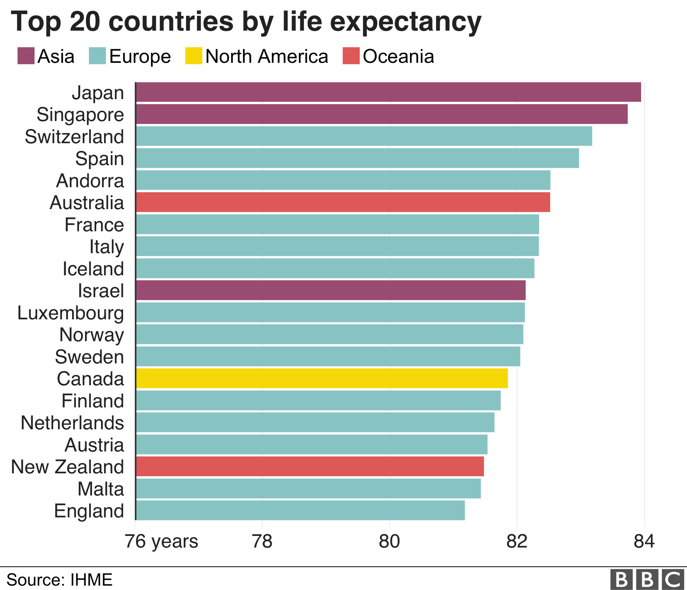
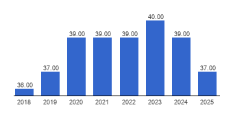

La felicidad de una sociedad no depende únicamente de la riqueza económica. Factores como el apoyo social, la salud, la libertad y la confianza en las instituciones influyen profundamente en la calidad de vida de las personas. El World Happiness Report evalúa estos elementos para comparar el bienestar entre países.

Se refiere a la percepción de que una persona cuenta con familiares o amigos en quienes confiar en momentos difíciles.

Indica el nivel de desarrollo económico promedio por habitante y su capacidad para cubrir necesidades básicas.

Mide el grado en que las personas sienten que pueden elegir cómo vivir sus vidas.

Refleja la cantidad de años que se espera que una persona viva con buena salud.

Mide el nivel de confianza en las instituciones públicas y la percepción de transparencia.
Finlandia presenta el Ladder Score total más alto. Destaca especialmente en apoyo social, PIB per cápita sólido y baja percepción de corrupción. También muestra buenos niveles de libertad para tomar decisiones y esperanza de vida saludable. La combinación de bienestar económico, confianza social e instituciones fuertes impulsa su liderazgo.
Dinamarca se encuentra muy cerca de Finlandia en puntaje total. Sus fortalezas principales incluyen alto apoyo social, libertad individual significativa y muy baja corrupción percibida. Existe un gran balance entre riqueza, seguridad social y confianza institucional.
Islandia también obtiene un puntaje alto, similar al de Dinamarca. Resalta por su fuerte apoyo social, libertad de elección y buen nivel de esperanza de vida saludable, lo que refleja una sociedad cohesionada y con alta calidad de vida.
Colombia presenta un Ladder Score notablemente menor en comparación con los países nórdicos. Su contribución de PIB per cápita es menor, la percepción de corrupción es mayor y el apoyo social, aunque presente, es más bajo. Factores estructurales como la economía, las instituciones y la confianza limitan el puntaje global.
Los países mejor posicionados comparten alto apoyo social, buen nivel económico, baja corrupción, alta libertad de elección y buena salud. Colombia muestra fortalezas sociales importantes, pero debilidades más marcadas en economía e instituciones que afectan su nivel de bienestar general.